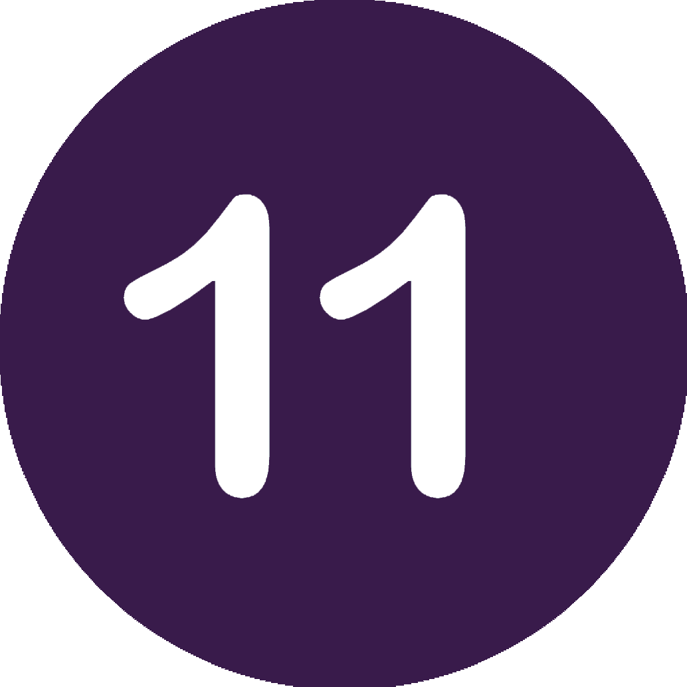
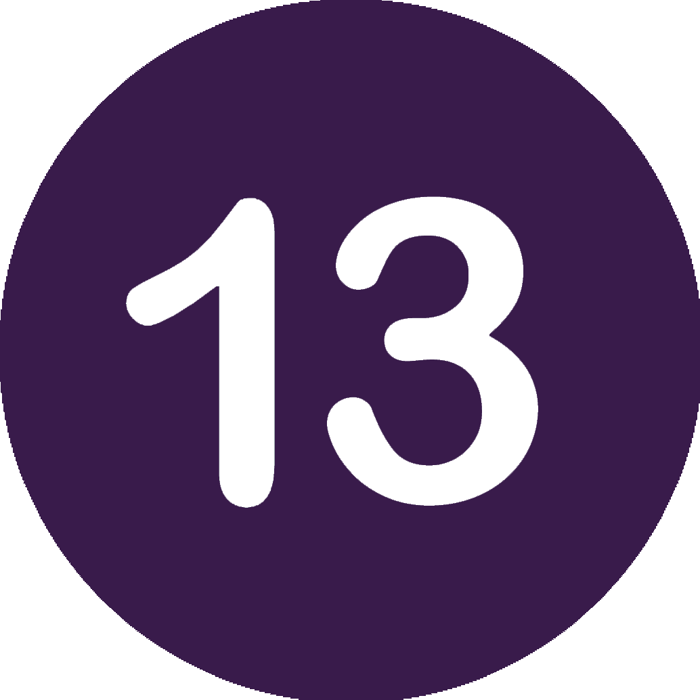

Четвертый урок
Практическое задание по созданию нейронной сети.
А теперь попробуйте своими руками создать нейронную сеть.
Теперь некоторые команды придется писать самостоятельно
Для начала посмотрите список необходимых переменных и их задач.
X — матрица входного набор данных; строки – тренировочные примеры
y – матрица выходного набора данных; строки – тренировочные примеры
l0 – первый слой сети, определённый входными данными
l1 – второй слой сети, или скрытый слой
l2 – финальный слой, это наша гипотеза. По мере тренировки должен приближаться к правильному ответу
syn0 – первый слой весов, Synapse 0, оъединяет l0 с l1.
syn1 – второй слой весов, Synapse 1, объединяет l1 с l2.
l2_error – промах сети в количественном выражении
l2_delta – ошибка сети, в зависимости от уверенности предсказания. Почти совпадает с ошибкой, за исключением уверенных предсказаний
l1_error – взвешивая l2_delta весами из syn1, мы подсчитываем ошибку в среднем/скрытом слое
l1_delta – ошибки сети из l1, масштабируемые по увеернности предсказаний. Почти совпадает с l1_error, за исключением уверенных предсказаний.
Итак, начнем. Вам необходимо запомнить пропуски. Вместо символов #??? написать свой код

import #???
#попробуйте вспомнить, как называется библиотека линейной алгебры

# пишем функцию активации
def nonlin(#???
): #???

# создаем переменную для набора входных данных
X = #???

# выходные данные
y = #???

# сделаем случайные числа более определёнными
np.random.seed(1)

# случайно инициализируем веса, в среднем - 0
syn0 = #???
syn1 = #???
for j in range(60000):

# проходим вперёд по слоям 0, 1 и 2 (прямое распространение)
l0 = #???
l1 = #???
l2 = #???

# выполняем проверку ошибок
l2_error = #???
if (j% 10000) == 0:
print "Error:" + str(np.mean(np.abs(l2_error)))
# в какую сторону нужно двигаться?
# если мы были уверены в предсказании, то сильно менять его не надо
l2_delta = #???
# как сильно значения l1 влияют на ошибки в l2?
l1_error = l2_delta.dot(syn1.T)

# в каком направлении нужно двигаться, чтобы прийти к l1?
# если мы были уверены в предсказании, то сильно менять его не надо
l1_delta = #???
#обновим веса
syn1 += #???
syn0 += #???

#выведем результат:
print()
Поздравляем, вы самостоятельно сделали нейросеть!